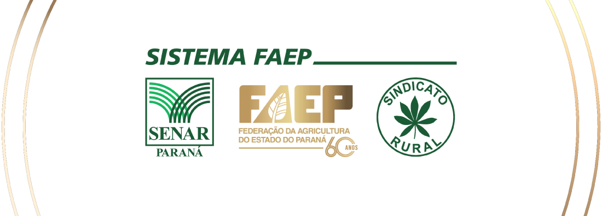

O Foco é a Proteção
Segurança do trabalhador, conformidade ambiental e eficiência agronômica operando juntas.
Inclui a figura do aplicador de agrotóxicos. Determina o registro obrigatório nos órgãos estaduais a campo e prevê que o MAPA definirá diretrizes para os cursos.
Define o conteúdo programático mínimo dos cursos, dividindo-os em conhecimentos básicos de segurança (I a V) e habilitação específica por equipamento (Módulo VI).
Estabelece diretrizes operacionais de credenciamento de entidades, modalidades (presencial/EAD), determina validade de 5 anos (presencial) e regras de certificação.
Reescrita com contribuições ativas do Sistema FAEP. Busca corrigir gargalos operacionais no campo, permite o aproveitamento total da NR 31 e prorroga prazos para 2028.
Aprovação prévia no Bloco 1 é obrigatória para realizar:
O SENAR-PR não repassou o problema; estruturou a solução operacional:
| Aspecto | NR 31.7 (Trabalhista) | Aplicador Legal (Agropecuário) |
|---|---|---|
| Órgão Fiscalizador | Ministério do Trabalho e Emprego | Ministério da Agricultura (MAPA) |
| Público-Alvo | Apenas trabalhadores CLT | Todos que aplicam (Produtores e CLT) |
| Foco da Capacitação | Saúde e segurança (Mínimo 20h) | Segurança + Habilitação por Máquina |
| Natureza | Obrigação do Empregador | Habilitação Pessoal do Aplicador |
Conclusão SENAR-PR: São exigências diferentes, mas com conteúdos altamente convergentes. A melhor solução é a INTEGRAÇÃO das duas normas em uma única grade.
Três percursos estruturados para não haver confusão na base:
Aproveitamento de capacitações anteriores (Certificados antigos).
Primeira Habilitação (Jornada CLT / Com Vínculo).
Primeira Habilitação (Jornada Autônomo / Sem Vínculo).
Para participantes que já realizaram treinamentos antes da nova regulamentação:
Produtor enviando o funcionário para a NR e depois para o curso de operação da máquina separadamente:
Unificação inteligente que garante NR e Máquina na mesma jornada:
*Economia real de até 16h laborais (2 dias de trabalho) por funcionário.
Como os módulos foram batizados estruturalmente para abarcar as duas normas:
Cobre o conteúdo básico exigido pelo MAPA + todas as diretrizes de saúde do MTE.
A parte técnica e prática do equipamento selecionado.
Trajeto enxuto focado diretamente na habilitação do MAPA, sem as horas excedentes da regra trabalhista.
Introdução, legislação, toxicologia básica e EPI de forma compacta e objetiva.
Prática idêntica no campo.
O aluno que já tem carteira de "Tratorizado" e quiser operar um "Costal", cursa APENAS a Fase 2 (Prática de 4h) sem precisar refazer o módulo teórico.
A nova habilitação não ganha 5 anos isolados. Ela expira exatamente na mesma data da primeira habilitação obtida.
O curso matriculado deve corresponder rigorosamente ao equipamento operado na propriedade.
Identificação na Base
O Sindicato deve questionar a realidade técnica antes de fechar a turma.
Fluxo de processamento e emissão de documentação:
Capacita o aluno, aplica a prova e emite o CERTIFICADO de conclusão.
Recebe os dados do sistema integrado e aprova o CADASTRO oficial.
Acessa o app nacional e retira a sua CARTEIRA DIGITAL válida.
O Sistema FAEP não atua apenas para cumprir regras; nós transformamos uma pesada legislação burocrática em capacitação racional, viável e de excelência para o produtor rural.
Anotação do slide atual...